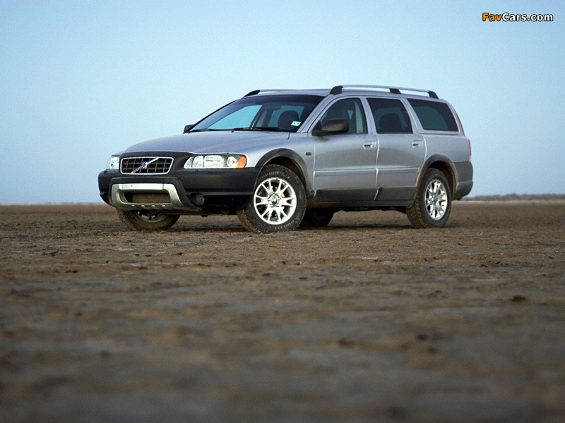

Если, Вы, спросите почему на заднем плане какой-то старик?
То, знайте!!!
Это не просто старик! Это сам Один!
При чём тут Один? Именно с Одином ассоциируетя авто.
Один, у нас, скандинавский БОГ!
Машинка наша, тоже скандинавская. Отсюда и ассоциация.
Хотя, честно говоря, это происходит только в узком кругу фанатиков.
Почему фанатиков?
Потому, что:
Почему же находятся любителя данного авто?
Потому, что вы получаете:
Знакомьтесь! Volvo XC70!
